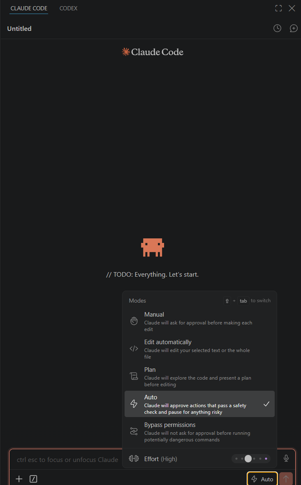

부록 · 자동 허가 모드¶
코딩 에이전트는 안전을 위해 작업 실행 전 "이 파일을 수정해도 될까요?", "이 명령어를 실행해도 괜찮을까요?" 하고 매번 확인을 요청합니다. 실습 중에는 파일을 수백 번 고치므로, 매번 승인하는 번거로움을 줄이도록 미리 자동 허가 모드로 바꿔둡니다.
시작 전에 이것만 기억하세요
이 설정은 실습 폴더에서만 편의를 위해 씁니다. 실제 업무 폴더나 민감한 파일이 있는 폴더에서는 기본 승인 모드로 되돌려 쓰시길 권합니다. 실수로 지운 파일을 되살릴 방법이 없는 경우가 있습니다.
Claude Code는 자유도에 따라 두 단계로 설정할 수 있습니다.
| 단계 | 동작 | 추천 상황 |
|---|---|---|
| 자유도 中 — Auto | 안전 검사를 통과한 작업은 자동 승인, 위험한 것만 확인 | 오늘 실습 (권장) |
| 자유도 上 — Bypass permissions | 검사 없이 모두 자동 승인 | 서버 실행·설치·테스트까지 자동화 |
자유도 中 · Auto¶
VS Code 오른쪽 Claude Code 패널 입력창 오른쪽 아래의 모드 버튼을 눌러 Auto를 고릅니다.

| 모드 | 동작 |
|---|---|
Manual |
편집할 때마다 물어봅니다 |
Edit automatically |
파일 편집은 자동, 터미널 명령은 여전히 확인 |
Plan |
고치기 전에 계획을 먼저 보여줍니다 |
Auto |
안전 검사를 통과한 작업은 자동, 위험한 것만 멈춰서 확인 (오늘 권장) |
Bypass permissions |
검사 없이 모두 자동 (아래 자유도 上) |
고르고 나면 입력창 오른쪽 아래에 Auto 라벨이 뜹니다.
자유도 上 · Bypass permissions¶
파일 편집뿐 아니라 터미널 명령 실행까지 확인 없이 진행합니다. 먼저 VS Code 설정에서 이 모드를 허용한 뒤, Claude Code 하단에서 모드를 켭니다.
1단계. VS Code 왼쪽 아래 톱니바퀴(⚙️) → Settings (Ctrl+,)

2단계. 왼쪽 트리에서 Extensions → Claude Code

3단계. 맨 위 Allow Dangerously Skip Permissions 체크박스를 켭니다

4단계. Claude Code 패널 하단 드롭다운에서 Bypass permissions 선택

완료
입력창 오른쪽 아래에 Bypass permissions 라벨이 뜨면 적용된 것입니다. 이제 파일 편집·패키지 설치·서버 실행 같은 명령이 모두 자동으로 진행됩니다.
이 옵션이 무엇을 허용하나요
이 옵션은 승인 없이 명령을 실행하게 합니다. 오늘 쓰는 실습 폴더에서만 켜고, 회사 자료나 개인 파일이 있는 폴더에서는 켜지 마세요.
되돌리는 방법¶
실습이 끝나고 평소대로 쓰고 싶을 때:
| 되돌릴 것 | 방법 |
|---|---|
| 자동 편집 | 모드 드롭다운에서 Ask before edits로 되돌립니다 |
| 명령 자동 실행 | Settings → Extensions → Claude Code → Allow Dangerously Skip Permissions 체크 해제 |